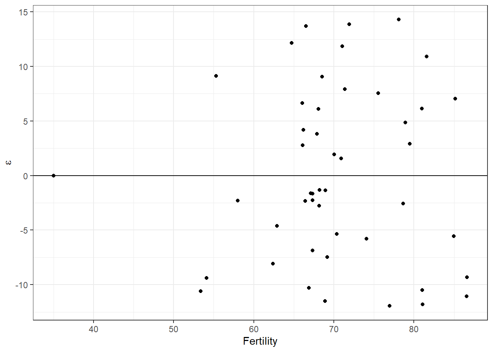
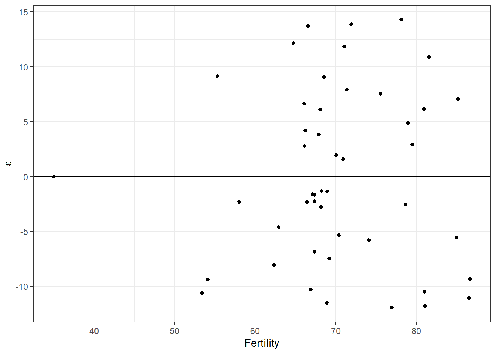

11.5 A priori selection
The most widely perpetuated approach to model selection is probably a prior model selection. This means consideration of only those models for which we have a priori reasons for inclusion. These are usually models that are designed to represent competing [biological] hypotheses or to balance those hypotheses within a framework for testing. In simple situations, we compare all the models in which we are interested through a single phase of model selection. Will stick to this approach for class. But, in more complex situations we might apply a hierarchical (multi-phase) approach to reduce complexity and test hypotheses about specific groups of parameters one at a time to avoid inflated type-I error rates (yup, that’s still a thing!) when we have lots and lots of models.
11.5.1 Multi-phase (heirarchical) selection
Hierarchical model selection is widely used for complex models that have different underlying processes (and often “likelihoods”) within. A great example of these kinds of models are occupancy and mark-recapture models that incorporate “sub-models” for estimating detection probabilities and other “sub-models” for estimating things like presence-absence, survival, or abundance. These methods are widely used in studies of fish and wildlife populations, and are also a cornerstone in modern epidemiology when we want to account for false positives or false negatives.
Essentially, multi-phase model selection means that we impose some kind of hierarchy on the steps we take to test competing hypotheses. For instance, we might first wish to compare hypotheses about factors influencing detection probabilities in our examples above. Then, we could use the best model(s) from that set of hypotheses as the basis for testing hypotheses about factors that influence processes such as survival or breeding probability.
11.5.2 Single-phase selection
This is where we’ll spend the majority of our time for the rest of the chapter and the rest of the book. Single-phase selection means that we want to set up an compare a single group of models that each represent a distinct hypothesis (or set of hypotheses in the case of n-way ANOVA, ANCOVA, and multiple regression).
11.5.3 Tools for a priori model selection
Here, we will focus on a few common approaches to model selection that can be useful in different situations. We will also discuss the importance of thinking about the hypotheses that are represented by our models and how model selection results are interpreted as we go. In this realm of model selection, it is important that we limit the number of models considered to avoid introducing spurious hypotheses and drawing junk conclusions. Remember, now matter what model we choose as best, it can’t represent a good hypothesis if we don’t know what it means. And, no matter what, we will always have a best model even if the best model is a shitty one.
In the words of the great Scroobius Pip in his Death of the journalist: > Throw enough shit at the wall and some of it will stick But make no mistake, you’re wall’s still covered in shit
To ensure that our walls don’t get covered in excrement at all, we will examine the historical application of and difficulties of the Adjusted R2 statistic, and then we will dig into information-theoretic approaches using the Akaike information criterion (AIC) as this, along with other information criteria, is now the primary method used for model selection.
Let’s check some of these tools out!
Start by fitting some models, we will use the swiss data again this week for the purpose of demonstrating selection tools because it is a noisy data set with lots of complexity and colinearity between variables.
data("swiss")
# Fit the model that tests the
# effects of education on the fertility index
mod_Ed <- lm(Fertility ~ Education, data = swiss)
# Fit another model that tests
# effects of % Catholic on Fertility
mod_Cath <- lm(Fertility ~ Catholic, data = swiss)
# Fit a model with additive effects
# of both explanatory variables
mod_EdCath <- lm(Fertility ~ Education + Catholic, data = swiss)
# Fit a model with multiplicative
# effects of both explanatory variables
mod_EdxCath <- lm(Fertility ~ Education * Catholic, data = swiss)We have four models that represent competing hypotheses:
1.Education alone is the best explanation among those considered for variability in fertility.
2.Percent Catholic alone is the best explanation among those considered for variability in fertility.
3.The additive effects of Education and percent Catholic are the best explanation among those considered for variability in fertility.
4.The interactive effects of Education and percent Catholic are the best explanation among those considered for variability in fertility.
Great, but how can we evaluate which of these hypotheses is best supported by our data?
Have a look at the residuals of the most complex of these models to make sure we haven’t shattered the assumptions of linear models. In this case, “most complex” means the model with the most parameters, or mod.EdxCath. If you are still unsure as to why this model has more parameters than mod.EdCath, then have a look at the output of model.matrix() for each of them.
# Extract the residuals from
# the fitted model object
resids <- mod_EdxCath$residuals
# Add the residuals to the swiss data
swiss_resids <- data.frame(swiss, resids)They definitely look like they are normal with a mean of zero:

A glance at the residuals vs fitted seems to indicate that we don’t have any concerning patterns in the residuals with respect to the observed value of fertility, although we do see that one point all by itself over to the left that might make us want to puke a little.
# Make a pretty plot to make sure we haven't
# completely forgotten about those pesky
# assumptions from Chapter 9
ggplot(mod_EdxCath, aes(x = .fitted, y = .resid)) +
geom_jitter() +
geom_abline(intercept = 0, slope = 0) +
xlab("Fertility") +
ylab(expression(paste(epsilon))) +
theme_bw()
Now that we have verified we are not in violation of assumptions we can apply model selection to find out if one is clearly better than the others and if so which. Then, we’ll use our best model to make predictions just like last week and next week and the week after that…and so on.
Let’s start by making a list of our models and giving each element (model) in the list a name:
# Making a list that holds are models inside it
mods <- list(mod_Ed, mod_Cath, mod_EdCath, mod_EdxCath)
# Give names to each element of the list (each model)
names(mods) <- c("Ed", "Cath", "EdCath", "EdxCath")11.5.3.1 Adjusted R2
The adjusted R2 offers a relatively simple tool for model selection. It is superior to the multiple R2 with which we have been working only because it balances the number of parameters in the model with the number of observations in our data.
Just as before, we can look at the summary of our model objects that we have stored in this list.
##
## Call:
## lm(formula = Fertility ~ Education, data = swiss)
##
## Residuals:
## Min 1Q Median 3Q Max
## -17.036 -6.711 -1.011 9.526 19.689
##
## Coefficients:
## Estimate Std. Error t value Pr(>|t|)
## (Intercept) 79.6101 2.1041 37.836 < 2e-16 ***
## Education -0.8624 0.1448 -5.954 3.66e-07 ***
## ---
## Signif. codes: 0 '***' 0.001 '**' 0.01 '*' 0.05 '.' 0.1 ' ' 1
##
## Residual standard error: 9.446 on 45 degrees of freedom
## Multiple R-squared: 0.4406, Adjusted R-squared: 0.4282
## F-statistic: 35.45 on 1 and 45 DF, p-value: 3.659e-07# REMEMBER: this model is an object stored in R,
# so we can also look at the names of this summary,
# like this
names(summary(mods$Ed))## [1] "call" "terms" "residuals" "coefficients"
## [5] "aliased" "sigma" "df" "r.squared"
## [9] "adj.r.squared" "fstatistic" "cov.unscaled"Whoa, this is some heavy stuff. To recap, we have made a list of models, each of which are actually lists themselves. Each model has lots of elements. The output of summary() for each model is also a list with and the elements have names of their own. Within that final list we can find the Adusted R-squared or what summary() calls the adj.r.squared. It’s turtles all the way down all over again.
We can, of course, extract the adjusted R2 value from the output of summary() by name:
ed_r <- summary(mods$Ed)$adj.r.squared
cath_r <- summary(mods$Cath)$adj.r.squared
EdCath_r <- summary(mods$EdCath)$adj.r.squared
EdxCath_r <- summary(mods$EdxCath)$adj.r.squaredAnd, we could even put them in a data frame with the original model names to compare the R2 values.
## model adj_r_squared
## 1 Ed 0.4281849
## 2 Cath 0.1975591
## 3 EdCath 0.5551665
## 4 EdxCath 0.5700628When we compare adjusted R2, the model with the highest R2 is the “best model”. So, in this case, we would conclude that EdxCath is the best model. But, we have two problems. First, how do we tell if an R2 value of 0.57 is meaningfully better than an R2 value of 0.57 statistically? Second, we know we have more parameters in EdxCath than in EdCath. Are these extra parameters worth the small increase in R2?. Although we won’t dive into statistics like the PRESS statistic, this and other traditional model-selection statistics suffer the same two deficiencies. Finally, the R2 is a statistic derived from the sum of squared errors in least-squares estimation so we won’t be able to use it starting in Chapter 12 when we start to estimate regression coefficients using maximum likelihood estimation from now on.
So, how to life?
11.5.3.2 Information theoretic approaches
Akaike’s information criterion (AIC)
This tool (or the popular alternatives BIC, DIC, and WAIC) will be more useful for us during the next several weeks than any of the methods we’ve discussed so far because it allows us to draw inference based on the likelihood of the model rather than the sum of squared errors, which we will learn that GLMs and other generalizations do not have!
Information-theoretic approaches to model selection are based on the trade off in information gained through addition of parameters (explanatory variables and how they combine) and the added complexity of the models, with respect to sample size. I will hold off on a detailed explanation because you will learn more about this tool in your readings. So, let’s cut straight to the chase.
Remember that we made a list of a priori models above that we would like to consider.
Have a look at the names of those models just in case you’ve forgotten them.
## [1] "Ed" "Cath" "EdCath" "EdxCath"We can extract the AIC value for each model in our list by using the lapply() or mapply functions. These functions will split up the list and “apply” a function to each of the elements of that list. The primary difference is that lapply() returns a named list and mapply() returns an atomic vector with named elements (easier to work with if we want to combine results with model names).
## Model AIC
## Ed Ed 348.4223
## Cath Cath 364.3479
## EdCath EdCath 337.5636
## EdxCath EdxCath 336.8823Now we have printed a dataframe holding with the names of our models in one column and their AIC values in another. Unlike the R2 statistic, smaller is better when it comes to AIC (and other I-T approaches), even if the values are negative. The actual value of AIC for any given model has no interpretation other than relative to the remaining three. To clarify: if I have a single AIC value for one model, it is meaningless. I must have another model with the same response (and data!!) to compare with. There is no such think as an inherently “good” or “bad” AIC. They are only interpreted relative to other models in the same candidate set. This is fundamentally different than the R2 statistic.
At a glance, we can see that our model with the interaction is the ‘best’ model in the set as indicated by our other statistics, but this time it is only better by less than 1 AIC (lower AIC is better). Can we say anything about that?
Funny you should ask. Yes, we can. We have a few general rules of thumb for interpreting the AIC statistic, and we can actually derive a whole set of statistics based on these rankings.
Open can of worms…
# First, we need another library
library(AICcmodavg)
# Let's start digging into this stuff
# by making a table that can help us along.
aictab(cand.set = mods, modnames = names(mods))##
## Model selection based on AICc:
##
## K AICc Delta_AICc AICcWt Cum.Wt LL
## EdxCath 5 338.35 0.00 0.52 0.52 -163.44
## EdCath 4 338.52 0.17 0.48 1.00 -164.78
## Ed 3 348.98 10.63 0.00 1.00 -171.21
## Cath 3 364.91 26.56 0.00 1.00 -179.17Lots going on here…What does it all mean?
We’ll walk through the table From left to right. First, notice that the row.names() are actually our model names, which is nice. Next, you should take note that the models are ranked in order of increasing AIC. With some context in-hand we can look at each column as follows:
K is the number of parameters in each of the models
AICc is the AIC score, but it is corrected for sample size. Generally speaking, this means models with many parameters and small number of observations are penalized for potential instability in the likelihood. In general, using the AICc is almost always a practical approach because it is conservative when we don’t have much data and the effect of the penalty goes away with sufficiently large sample sizes (so it becomes equivelant to AIC).
Delta_AICc is the difference in AICc between the best model and each of the other models.
AICcWt is the probability that a given model is the best model in the candidate set.
Cum.Wt is the cumulative weights represented by each of the models from best to last. This can be used to create a 95% confidence set of models.
LL is the log likelihood of each model, the very same discussed at the beginning of our discussions about probability distributions!
11.5.3.3 Interpreting AIC statistics
In general:
A lower AIC is better.
Models with \(\Delta\)AICc of less than 2.0 are considered to have similar support as the best model. Models with \(\Delta\)AICc from 2 to 4 have some support in the data, but not as much. Models with \(\Delta\)AICc > 4 have virtually no support.
The ratio of AIC weights (wi)can be used to interpret the improvement between the best model and each subsequent model. In this example, the best model is only \(\frac{0.52}{0.48} = 1.08 \times\) better supported than the next best model, but the best two models have all of the support.
Our results suggest that Education and Catholic are the both important in explaining the variation in Fertility, because both are included in any model receiving any support in the candidate set.
Unlike our previous results, we have no clear winner in this case, and we are left wondering whether it is the additive effects or the multiplicative effects of Education and Catholic that are important. But, we still may want to get estimates for our main effects, at least, so we can make some good solid inference on the effect sizes. If only we had a method for dealing with this uncertainty now…Oh wait, we do!
11.5.3.4 Model averaging
Using model averaging to account for the model uncertainty, we can see that the unconditional confidence interval for Education is negative and does not overlap zero, and the opposite trend is evident in the trend for Catholic. We also find out that the interaction between Education and Catholic is actually not significant, which is probably why the main effects model had equivelant support in the candidate set.
##
## Multimodel inference on "Education" based on AICc
##
## AICc table used to obtain model-averaged estimate:
##
## K AICc Delta_AICc AICcWt Estimate SE
## Ed 3 348.98 10.63 0.00 -0.86 0.14
## EdCath 4 338.52 0.17 0.48 -0.79 0.13
## EdxCath 5 338.35 0.00 0.52 -0.43 0.26
##
## Model-averaged estimate: -0.6
## Unconditional SE: 0.28
## 95% Unconditional confidence interval: -1.14, -0.06##
## Multimodel inference on "Catholic" based on AICc
##
## AICc table used to obtain model-averaged estimate:
##
## K AICc Delta_AICc AICcWt Estimate SE
## Cath 3 364.91 26.56 0.00 0.14 0.04
## EdCath 4 338.52 0.17 0.48 0.11 0.03
## EdxCath 5 338.35 0.00 0.52 0.18 0.05
##
## Model-averaged estimate: 0.15
## Unconditional SE: 0.06
## 95% Unconditional confidence interval: 0.04, 0.26modavg(mods,
parm = "Education:Catholic", modnames = names(mods),
conf.level = .95, exclude = TRUE
)##
## Multimodel inference on "Education:Catholic" based on AICc
##
## AICc table used to obtain model-averaged estimate:
##
## K AICc Delta_AICc AICcWt Estimate SE
## EdxCath 5 338.35 0 1 -0.01 0.01
##
## Model-averaged estimate: -0.01
## Unconditional SE: 0.01
## 95% Unconditional confidence interval: -0.02, 0Isn’t that fantastic? From here we could move on to make predictions based on the model-averaged parameter estimates using what you learned last week. But…what if we weren’t convinced so easily and wanted a reliable means of seeing how well our model actually performs now that we’ve selected one (or more)?
The simple fact of the matter is that we have selected a “best” model, but that doesn’t mean our model is necessarily a “good” model.